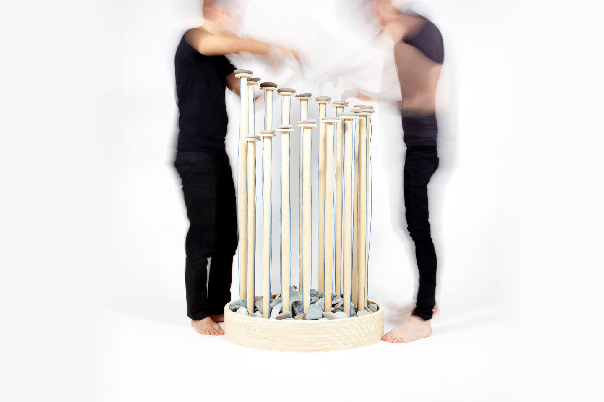
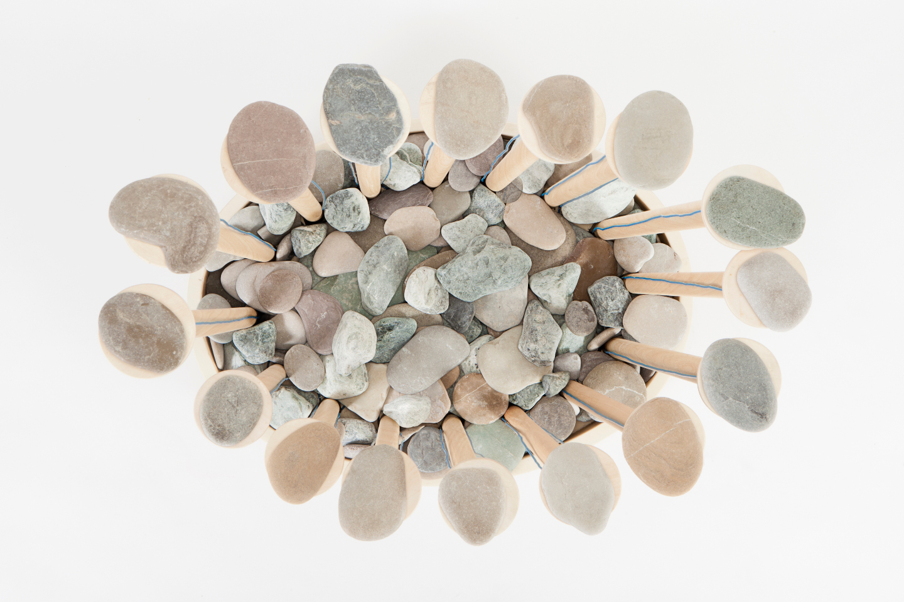
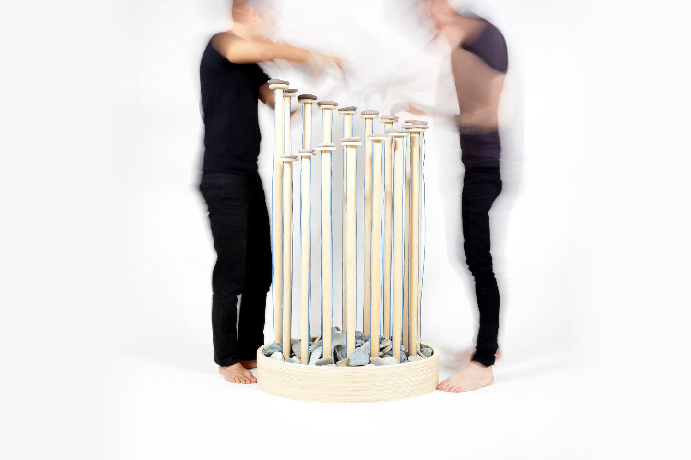
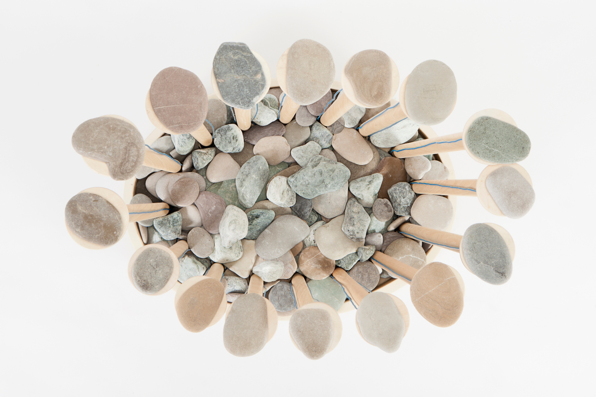
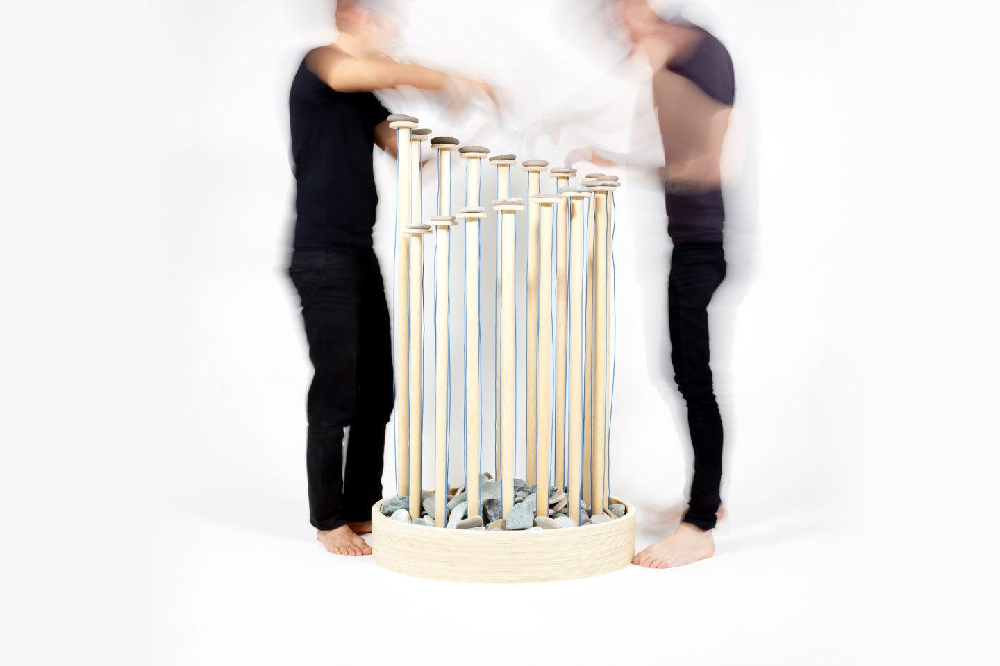
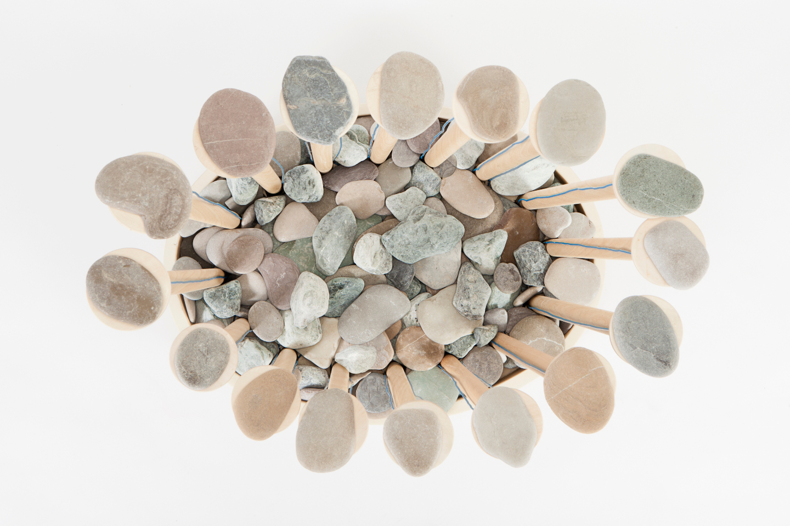
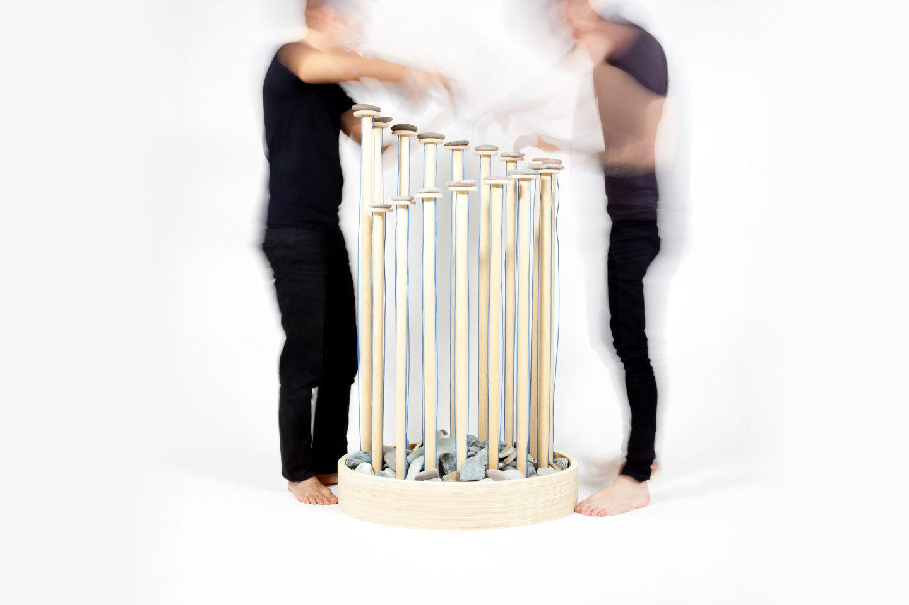
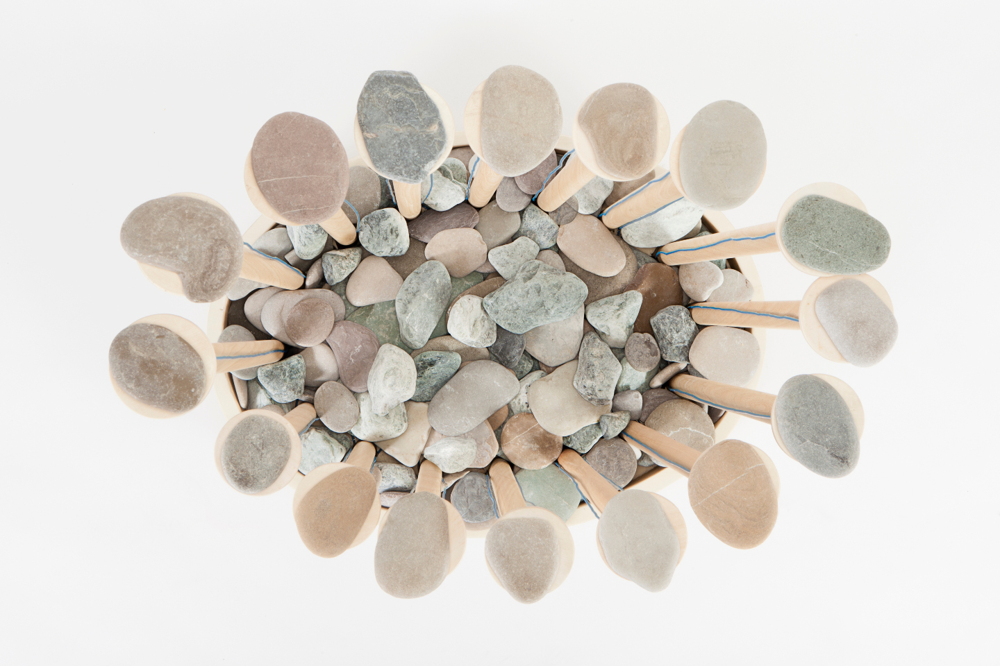

The Stone Pad is an electronic musical instrument made of stones and wood
The project was ideated together with electroacoustic composer Jhon William Castaño Montoya whose last album Mohs was inspired by mineralogist Friedrich Mohs’ chart of hardness of minerals. He came to me and product designer Ryu Yamamoto with the idea of making some physical object related to its concept. The Stone Pad would mimic the diversity of minerals in the Mohs scale by linking each of them to a specific sound, allowing the musician to perform his music by using stones as if they were piano keys.
The instrument’s wooden structure is arranged in a spiral shape, suggesting harmonic growth. Wooden stems sustaining the stones builds up from the ground, positioned on a base also filled with stones. Force sensing resistors are placed under each stone to detect pressure from above. The signal collected from an Arduino is then digitally processed and converted to MIDI for controlling a music software.
2013 - Fabrica
Role: Interaction design/technology
Press:
Dezeen,
Knowable
Photos: Marco Zanin
Video: Coleman Guyon